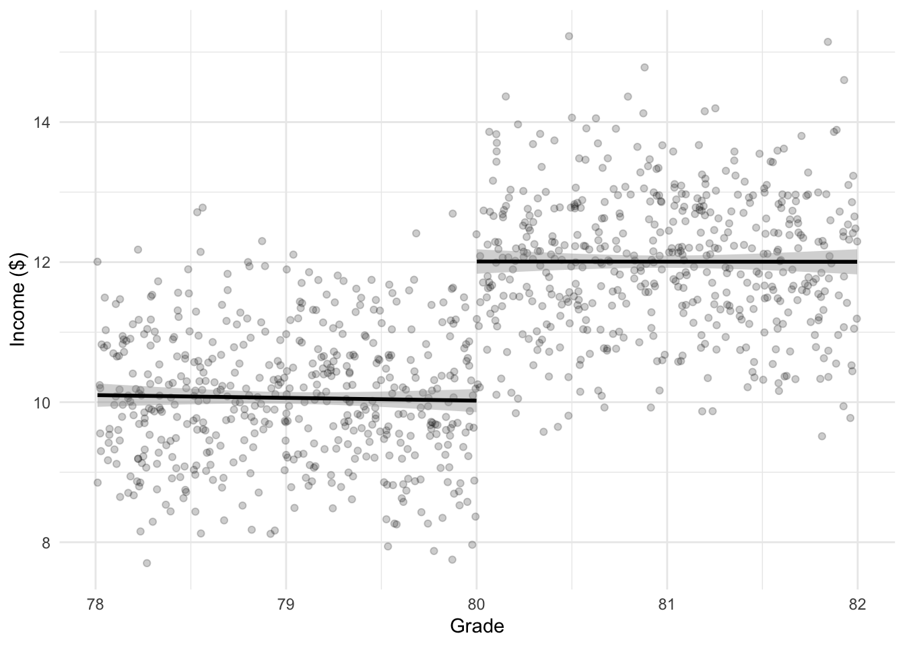

Chapter 34 Regression discontinuity design
Required reading
- Gertler, Paul, Sebastian Martinez, Patrick Premand, Laura Rawlings, and Christel Vermeersch, ‘Impact Evaluation in Practice’, Chapter 6.
Recommended reading
- Cunningham, Scott, ‘Causal Inference: The Mixtape’, chapter ‘Regression discontinuity’, freely available at: http://www.scunning.com/causalinference_norap.pdf.
- Dell, Melissa, Pablo Querubin, 2018, ‘Nation Building Through Foreign Intervention: Evidence from Discontinuities in Military Strategies’, The Quarterly Journal of Economics, Volume 133, Issue 2, pp. 701–764, https://doi.org/10.1093/qje/qjx037.
- Evans, David, 2013, ‘Regression Discontinuity Porn’, World Bank Blogs, 16 November, freely available at: https://blogs.worldbank.org/impactevaluations/regression-discontinuity-porn.
- Gelman, Andrew, and Jennifer Hill, 2007, Data Analysis Using Regression and Multilevel/Hierarchical Models, Chapter 10, pp. 212-215.
- Gelman, Andrew, and Guido Imbens, 2019, “Why high-order polynomials should not be used in regression discontinuity designs”, Journal of Business & Economic Statistics, 37, pp. 447-456.
- Gelman, Andrew, 2019, ‘Another Regression Discontinuity Disaster and what can we learn from it’, Statistical Modeling, Causal Inference, and Social Science, 25 June, freely available at: https://statmodeling.stat.columbia.edu/2019/06/25/another-regression-discontinuity-disaster-and-what-can-we-learn-from-it/.
- Harris, Rich, Mlacki Migliozzi and Niraj Chokshi, ‘13,000 Missing Flights: The Global Consequences of the Coronavirus’, New York Times, 21 February 2020. freely available here (if you make an account): https://www.nytimes.com/interactive/2020/02/21/business/coronavirus-airline-travel.html.
- Imbens, Guido W., and Thomas Lemieux, 2008, ‘Regression discontinuity designs: A guide to practice’, Journal of Econometrics, vol. 142, no. 2, pp. 615-635.
- Myllyvirta, Lauri, 2020, ‘Analysis: Coronavirus has temporarily reduced China’s CO2 emissions by a quarter’, Carbon Brief, 19 February, freely available at: https://www.carbonbrief.org/analysis-coronavirus-has-temporarily-reduced-chinas-co2-emissions-by-a-quarter.
- Taddy, Matt, 2019, Business Data Science, Chapter 5, pp. 146-152.
- Travis, D.J., Carleton, A.M. and Lauritsen, R.G., 2004. ‘Regional variations in US diurnal temperature range for the 11–14 September 2001 aircraft groundings: Evidence of jet contrail influence on climate’, Journal of climate, 17(5), pp.1123-1134.
- Travis, David J., Andrew M. Carleton, and Ryan G. Lauritsen. “Contrails reduce daily temperature range.” Nature, 418, no. 6898 (2002): 601-601.
- Zinovyeva, Natalia and Maryna Tverdostup, 2019, ‘Why are women who earn slightly more than their husbands hard to find?’, 10 June, freely available at: https://blogs.lse.ac.uk/businessreview/2019/06/10/why-are-women-who-earn-slightly-more-than-their-husbands-hard-to-find/.
Key concepts/skills/etc
- Generating simulated data.
- Understanding regression discontinuity and implementing it both manually and using packages.
- Appreciating the threats to the validity of regression discontinuity.
Key libraries
broomrdrobusttidyverse
Key functions/etc
lm()tidy()rdrobust()()
Pre-quiz
- What are the fundamental features of regression discontinuity design?
- What are the conditions that are needed in order for RDD to be able to be used?
- Can you think of a situation in your own life where RDD may be useful?
- What are some threats to the validity of RDD estimates?
- Please look at the
performancepackage: https://easystats.github.io/performance/index.html. What are some features of this package that may be useful in your own work? - What do you think about using COVID-19 in an RDD setting? Statistically? Ethically?
34.1 Introduction
Regression discontinuity design (RDD) is a popular way to get causality when there is some continuous variable with cut-offs that determine treatment. Is there a difference between a student who gets 79 per cent and a student who gets 80 per cent? Probably not much, but one gets an A-, while the other gets a B+, and seeing that on a transcript could affect who gets a job which could affect income. In this case the percentage is a ‘forcing variable’ and the cut-off for an A- is a ‘threshold’. As the treatment is determined by the forcing variable all you need to do is to control for that variable. And, these seemingly arbitrary cut-offs can be seen all the time. Hence, there has been an ‘explosion’ in the use of regression discontinuity design (Figure 34.1).
Please note that I’ve followed the terminology of Taddy, 2019. Gelman and Hill, 2007, and others use slightly different terminology. For instance, Cunningham refers to the forcing function as the running variable. It doesn’t matter what you use so long as you are consistent. If you have a terminology that you are familiar with then please feel free to use it, and to share it with me!
Figure 34.1: The explosion of regression discontinuity designs in recent years.
Source: John Holbein, 13 February 2020.
The key assumptions are:
- The cut-off is ‘known, precise and free of manipulation’ (Cunningham, 2020, p. 163).
- The forcing function should be continuous because this means we can say that people on either side of the threshold are the same, other than happening to just fall on either side of the threshold.
34.2 Simulated example
Let’s generate some data.
library(broom)
library(tidyverse)
set.seed(853)
number_of_observation <- 1000
rdd_example_data <- tibble(person = c(1:number_of_observation),
grade = runif(number_of_observation, min = 78, max = 82),
income = rnorm(number_of_observation, 10, 1)
)
# We want to make income more likely to be higher if they are have a grade over 80
rdd_example_data <-
rdd_example_data %>%
mutate(income = if_else(grade > 80, income + 2, income))
head(rdd_example_data)| person | grade | income |
| 1 | 79.4 | 9.43 |
| 2 | 78.5 | 9.69 |
| 3 | 79.9 | 10.8 |
| 4 | 79.3 | 9.34 |
| 5 | 78.1 | 10.7 |
| 6 | 79.6 | 9.83 |
Let’s make a graph.
rdd_example_data %>%
ggplot(aes(x = grade,
y = income)) +
geom_point(alpha = 0.2) +
geom_smooth(data = rdd_example_data %>% filter(grade < 80),
method='lm',
color = "black") +
geom_smooth(data = rdd_example_data %>% filter(grade >= 80),
method='lm',
color = "black") +
theme_minimal() +
labs(x = "Grade",
y = "Income ($)")
We can use a dummy variable with linear regression to estimate the effect (we’re hoping that it’s 2 because that is what we imposed.)
rdd_example_data <-
rdd_example_data %>%
mutate(grade_80_and_over = if_else(grade < 80, 0, 1))
lm(income ~ grade + grade_80_and_over, data = rdd_example_data) %>%
tidy()| term | estimate | std.error | statistic | p.value |
| (Intercept) | 11.7 | 4.24 | 2.76 | 0.00585 |
| grade | -0.021 | 0.0537 | -0.391 | 0.696 |
| grade_80_and_over | 1.99 | 0.123 | 16.2 | 1.34e-52 |
There are various caveats to this estimate that we’ll get into later, but the essentials are here.
The other great thing about regression discontinuity is that is can almost be as good as an RCT. For instance, (and I thank John Holbein for the pointer) Bloom, Bell, and Reiman (2020) compare randomized trials with RCTs and find that the RCTs compare favourably.
34.2.1 Different slopes
Figure 34.2 shows an example with different slopes.
Figure 34.2: Effect of minimum unit pricing for alcohol in Scotland.
Source: John Burn-Murdoch, 7 February 2020.
34.3 Overlap
In the randomised control trial and A/B testing section, because of randomised assignment of the treatment, we imposed that the control and treatment groups were the same but for the treatment. We moved to difference-in-differences, and we assumed that there was a common trend between the treated and control groups. We allowed that the groups could be different, but that we could ‘difference out’ their differences. Finally, we considered matching, and we said that even if we the control and treatment groups seemed quite different we were able to match those who were treated with a group that were similar to them in all ways, apart from the fact that they were not treated.
In regression discontinuity we consider a slightly different setting - the two groups are completely different in terms of the forcing variable - they are on either side of the threshold. So there is no overlap at all. But we know the threshold and believe that those on either side are essentially matched. Let’s consider the 2019 NBA Eastern Conference Semifinals - Toronto and the Philadelphia. Game 1: Raptors win 108-95; Game 2: 76ers win 94-89; Game 3: 76ers win 116-95; Game 4: Raptors win 101-96; Game 5: Raptors win 125-89; Game 6: 76ers win 112-101; and finally, Game 7: Raptors win 92-90, because of a ball that win in after bouncing on the rim four times. Was there really that much difference between the teams (Figure 34.3)?
Figure 34.3: It took four bounces to go in, so how different were the teams…?
Source: Stan Behal / Postmedia Network.
34.4 Examples
As with difference-in-differences, after I learnt about it, I began to see opportunities to implement it everywhere. Frankly, I find it a lot easier to think of legitimate examples of using regression discontinuity than difference-in-differences. But, at the risk of mentioning yet another movie from the 1990s that none of you have seen, when I think of RDD, my first thought is often of Sliding Doors (Figure 34.4).

Figure 34.4: Nobody expects the Spanish Inquisition.
Source: Mlotek, Haley, 2018, ‘The Almosts and What-ifs of ’Sliding Doors’’, The Ringer, 24 April, freely available at: https://www.theringer.com/movies/2018/4/24/17261506/sliding-doors-20th-anniversary.
Not only did the movie have a great soundtrack and help propel Gwyneth Paltrow to super-stardom, but it features an iconic moment in which Paltrow’s character, Helen, arrives at a tube station at which point the movie splits into two. In one version she just makes the train, and arrives home to find her boyfriend cheating on her; and in another she just misses the train and doesn’t find out about the boyfriend.
I’d say, spoiler alert, but the movie was released in 1998, so… Of course, that ‘threshold’ turns out to be important. In the world in which she gets the train she leaves the boyfriend, cuts her hair, and changes everything about her life. In the world in which she misses the train she doesn’t. At least initially. But, and I can’t say this any better than Ashley Fetters:
At the end of Sliding Doors, the “bad” version of Helen’s life elides right into the “good” version; even in the “bad” version, the philandering !@#$%^& boyfriend eventually gets found out and dumped, the true love eventually gets met-cute, and the MVP friend comes through. According to the Sliding Doors philosophy, in other words, even when our lives take fluky, chaotic detours, ultimately good-hearted people find each other, and the bad boyfriends and home-wreckers of the world get their comeuppance. There’s no freak turn of events that allows the cheating boyfriend to just keep cheating, or the well-meaning, morally upright soulmates to just keep floating around in the universe unacquainted.
Fetters, Ashley, 2018, ‘I Think About This a Lot: The Sliding Doors in Sliding Doors’, The Cut, 9 April, freely available at: https://www.thecut.com/2018/04/i-think-about-this-a-lot-the-sliding-doors-in-sliding-doors.html.
I’m getting off-track here, but the point is, not only does it seem as though we have a ‘threshold’, but it seems as though there’s continuity!
Let’s see some more legitimate implementations of regression discontinuity. (And thank you to Ryan Edwards for pointing me to these.)
34.4.1 Elections
Elections are a common area of application for regression discontinuity because if the election is close then arguably there’s not much difference between the candidates. There are plenty of examples of regression discontinuity in an elections setting, but one recent one is George, Siddharth Eapen, 2019, ‘Like Father, Like Son? The Effect of Political Dynasties on Economic Development’, freely available at: https://www.dropbox.com/s/orhvh3n03wd9ybl/sid_JMP_dynasties_latestdraft.pdf?dl=0.
In this paper George is interested in political dynasties. But is the child of a politician more likely to be elected because they are the child of a politician, or because they happen to also be similarly skilled at politics? Regression discontinuity can help because in a close election, we can look at differences between places where someone narrowly won with where a similar someone narrowly lost.
In the George, 2019, case he examines:
descendant effects using a close elections regression discontinuity (RD) design. We focus on close races between dynastic descendants (i.e. direct relatives of former officeholders) and non-dynasts, and we compare places where a descendant narrowly won to those where a descendant narrowly lost. In these elections, descendants and non-dynasts have similar demographic and political characteristics, and win in similar places and at similar rates. Nevertheless, we find negative economic effects when a descendant narrowly wins. Villages represented by a descendant have lower asset ownership and public good provision after an electoral term: households are less likely to live in a brick house and to own basic amenities like a refrigerator, mobile phone, or vehicle. Moreover, voters assess descendants to perform worse in office. An additional standard deviation of exposure to descendants lowers a village’s wealth rank by 12pp.
The model that George, 2019, estimates is (p. 19: \[y_i = \alpha_{\mbox{district}} + \beta \times \mbox{Years descendant rule}_i + f(\mbox{Descendant margin}) + \gamma X_i + \epsilon_{i,t}.\] In this model, \(y_i\) is various development outcomes in village \(i\); \(\mbox{Years descendant rule}_i\) is the number of years a dynastic descendant has represented village \(i\) in the national or state parliament; \(\mbox{Descendant margin}\) is the vote share difference between the dynastic descendant and non-dynast; and \(\gamma X_i\) is a vector of village-level adjustments.
George, 2019, then conducts a whole bunch of tests of the validity of the regression discontinuity design (p. 19). These are critical in order for the results to be believed. There are a lot of different results but one is shown in Figure 34.5.
Figure 34.5: George, 2019, descendant effects identified using close elections RD design (p. 41).
34.4.2 Economic development
One of the issues with considering economic development is that a place typically is either subject to some treatment or not. However, sometimes regression discontinuity allows us to compare areas that were just barely treated with those that were just barely not.
One recent paper that does this Esteban Mendez-Chacon and Diana Van Patten, 2020, ‘Multinationals, monopsony and local development: Evidence from the United Fruit Company’ available here: https://www.dianavanpatten.com/. They are interested in the effect of the United Fruit Company (UFCo), which was given land in Costa Rica between 1889 and 1984. They were given roughly 4 per cent of the national territory or around 4500 acres. They key is that this land assignment was redrawn in 1904 based on a river and hence the re-assignment was essentially random with regard to determinants of growth to that point. They compare areas that were assigned to UFCo with those that were not. They find:
We find that the firm had a positive and persistent effect on living standards. Regions within the UFCo were 26 per cent less likely to be poor in 1973 than nearby counterfactual locations, with only 63 per cent of the gap closing over the following three decades. Company documents explain that a key concern at the time was to attract and maintain a sizable workforce, which induced the firm to invest heavily in local amenities that likely account for our result.
The model is: \[y_{i,g,t} = \gamma\mbox{UFCo}_g + f(\mbox{geographic location}_g) + X_{i,g,t}\beta + X_g\Gamma + \alpha_t + \epsilon_{i,g,t}.\] In this model, \(y_{i,g,t}\) is the development outcome for a household \(i\) in census-block \(g\) and year \(t\); \(\gamma\mbox{UFCo}_g\) is an indicator variable as to whether the census-block was in a UFCo area or not; \(f(\mbox{geographic location}_g)\) is a function of the latitude and longitude to adjust for geographic area; \(X_{i,g,t}\) is covariates for household \(i\); \(X_g\) is geographic characteristics for that census-block; and \(\alpha_t\) is a year fixed effect.
Again, there are a lot of different results but one is shown in Figure 34.6.
Figure 34.6: George, 2020, UFCo effect on the probability of being poor (p. 17).
34.5 Implementation
Although they are fairly conceptually similar to work that we have done in the past, if you are wanting to use regression discontinuity in your work then you might like to consider a specialised package. The package rdrobust is a one recommendation, although there are others available and you should try those if you are interested. (The rdd package had been the go-to for a while, but seems to have been taken off CRAN recently. If you use RDD, then maybe just follow up to see if it comes back on as that one is pretty nice.)
Let’s look at our example using rdrobust.
library(rdrobust)
rdrobust(y = rdd_example_data$income, x = rdd_example_data$grade, c = 80, h = 2, all = TRUE) %>% summary()## Call: rdrobust
##
## Number of Obs. 1000
## BW type Manual
## Kernel Triangular
## VCE method NN
##
## Number of Obs. 497 503
## Eff. Number of Obs. 497 503
## Order est. (p) 1 1
## Order bias (q) 2 2
## BW est. (h) 2.000 2.000
## BW bias (b) 2.000 2.000
## rho (h/b) 1.000 1.000
## Unique Obs. 497 503
##
## =============================================================================
## Method Coef. Std. Err. z P>|z| [ 95% C.I. ]
## =============================================================================
## Conventional 1.974 0.143 13.783 0.000 [1.693 , 2.255]
## Bias-Corrected 1.977 0.143 13.805 0.000 [1.696 , 2.258]
## Robust 1.977 0.211 9.374 0.000 [1.564 , 2.390]
## =============================================================================34.6 Fuzzy RDD
The examples to this point have been ‘sharp’ RDD. That is, the threshold is strict. However, in reality, often the boundary is a little less strict. For instance, consider the drinking age. Although there is a legal drinking age, say 19. If we looked at the number of people who had drank, then it’s likely to increase in the few years leading up to that age. Perhaps you went to Australia where the drinking age is 18 and drank. Or perhaps you snuck into a bar when you were 17, etc.
In a sharp RDD setting, if you know the value of the forcing function then you know the outcome. For instance, if you get a grade of 80 then we know that you got an A-, but if you got a grade of 79 then we know that you got a B+. But with fuzzy RDD it is only known with some probability. We can say that a Canadian 19-year-old is more likely to have drunk alcohol than a Canadian 18 year old, but the number of Canadian 18-year-olds who have drunk alcohol is not zero.
It may be possible to deal with fuzzy RDD settings with appropriate choice of model or data. It may also be possible to deal with them using instrumental variables, which we cover in the next section.
34.7 Threats to validity
The continuity assumption is fairly important, but we cannot test this as it is based on a counterfactual. Instead we need to convince people of it. Ways to do this include:
- Using a test/train set-up.
- Trying different specifications (and be very careful if your results don’t broadly persist when just consider linear or quadratic functions).
- Considering different subsets of the data.
- Consider different windows.
- Be up-front about uncertainty intervals, especially in graphs.
- Discuss and assuage concerns about the possibility of omitted variables.
The threshold is also important. For instance, is there an actual shift or is there a non-linear relationship?
We want as ‘sharp’ an effect as possible, but if the thresholds are known, then they will be gamed. For instance, there is a lot of evidence that people run for certain marathon times, and we know that people aim for certain grades. Similarly, from the other side, it is a lot easier for an instructor to just give out As than it is to have to justify Bs. One way to look at this is to consider how ‘balanced’ the sample is on either side of the threshold. Do this by using histograms with appropriate bins, for instance Figure 34.7, which is from Allen et al. (2017).
Figure 34.7: Bunching around marathon times.
34.8 Weaknesses
- External validity may be hard - think about the A-/B+ example - do you think the findings generalise to B-/C+?
- The important responses are those that are close to the cut-off. So even if we have a whole bunch of B- and A+ students, they don’t really help much. Hence we need a lot of data.
- There is a lot of freedom for the researcher, so open science best practice becomes vital.
References
Allen, Eric J, Patricia M Dechow, Devin G Pope, and George Wu. 2017. “Reference-Dependent Preferences: Evidence from Marathon Runners.” Management Science 63 (6). INFORMS: 1657–72.
Bloom, Howard, Andrew Bell, and Kayla Reiman. 2020. “Using Data from Randomized Trials to Assess the Likely Generalizability of Educational Treatment-Effect Estimates from Regression Discontinuity Designs.” Journal of Research on Educational Effectiveness, 1–30. https://doi.org/10.1080/19345747.2019.1634169.